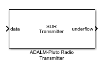

Pluto Transmitter
Transmit data to Analog Devices ADALM-PLUTO radio
- 
Libraries:
Communications Toolbox Support Package for ADALM-PLUTO Radio
Description
The Pluto Transmitter block is a signal source that sends data to an Analog Devices® ADALM-PLUTO radio. This connection enables you to simulate and develop various SDR applications.
The following diagram shows the interaction between Simulink®, the Pluto Transmitter block, and the radio hardware.

If the host is not connected to radio hardware, you can still use this block to develop a model that propagates sample time and data type information. To propagate this information, update your diagram.
Channel Input
The ADALM-PLUTO radio has a single channel for transmitting data from the Pluto Transmitter block. The block accepts a column vector signal of fixed length.
When the Pluto Transmitter block is called during simulation, it is possible
that the host did not send valid data to the radio hardware. To determine when valid data is
present, use the underflow port.
Design Custom Filter
If the gain or bandwidth characteristics of the default filter does not satisfy the requirements for your application, use the ADI filter wizard to design a custom filter that meets your specific requirements.
By using the ADI filter wizard, you can change the default filter design applied to the filter chain in the Pluto Transmitter block. To open the filter wizard, on the Advanced tab of the block, click Design custom filter. The wizard enables you to design a custom filter for the Analog Devices AD9361/AD9364 RF chip based on the Baseband sample rate (Hz) parameter. You can adjust and optimize the settings for calculating the analog filters, the interpolation and decimation filters, and the FIR coefficients. When you finish with the wizard, to apply the filter settings, click Apply on the block.
The ADI filter wizard requires the following MathWorks® products:
MATLAB®
Signal Processing Toolbox™
DSP System Toolbox™
For instructions on operating the ADI filter wizard, visit the Analog Devices website at MATLAB Filter Design Wizard for AD9361.
For more information, see Baseband Sampling Rate and Filter Chains.
Examples


Ports
Input
Output
Parameters
Main Tab
Radio ConnectionRadio ID — Radio identifier
usb:0 (default) | character vector
Radio identifier of the radio hardware, specified as one of the following character vectors:
(recommended) A device-independent index, with the prefix
usb:, such as'usb:0','usb:1','usb:2', …, indicating the first, second, third, ..., attached ADALM-PLUTO radio, respectivelyAn IP address, with the prefix
ip:, such as'ip:192.168.3.2'A serial number, represented by a hexadecimal string with the prefix
sn:, such as'sn:100000235523730700230031090216eaeb'
When running multiple radios on the same host, the host assigns
each radio a different radio ID. When identifying the radio by USB ID, the first radio is
assigned usb:0, and the ID number increments by one for subsequent radios.
For example,the following configurations show IDs assigned to two radios connected on the same
host computer for a pair of Pluto Receiver and Pluto Transmitter blocks.

When operating on Windows® keep these considerations in mind.
When running multiple radios on the same host in separate MATLAB sessions, for each MATLAB session the first radio is assigned
usb:0, and the ID number increments by one for subsequent radios.Radios that are being used by one MATLAB are not seen by other MATLAB sessions. Use
findPlutoRadioand check the reported serial number to identify the radios seen in a particular MATLAB session.
For more information, see Setup for Two Radios Connecting to One Host.
Info — Radio information
button
Click Info to open a window that communicates with the attached radio hardware to obtain basic radio hardware information.
Note
The actual computed value and your specified setting can have a small mismatch. To confirm that the actual computed value is close enough to your specified setting, click Info on the block. This button synchronizes the block with the radio hardware.
When the Frequency correction (ppm) setting is
0, the factory-calibrated setting of the radio will be used.The Frequency correction (ppm) parameter changes the actual radio setting for Baseband sample rate (Hz) and Center frequency (Hz).
Source of center frequency — Source of center frequency
Dialog (default) | Input Port
Source of center frequency, specified as one of the following:
DialogSpecify the center frequency in the Center frequency (Hz) parameter.
Input PortSpecify the center frequency in Hz by using an input that is added to the block.
Center frequency (Hz) — RF center frequency setting in Hz
2.4e9 (default) | scalar
RF center frequency setting in Hz, specified as a scalar from
70.0e6 to 6.0e9.
Note
Analog Devices qualifies the PLUTO radio over a tuning range of 325 MHz to 3.8 GHz. This
support package enables you to use the PLUTO radio outside the qualified tuning range by
configuring the radio to operate using the AD9364 firmware. To extend the frequency range,
at the MATLAB command prompt, enter configurePlutoRadio('AD9364').
Dependencies
To enable this parameter, set Source of center frequency to
Dialog.
Source of gain — Source of gain
Dialog (default) | Input Port
Source of gain, specified as one of the following:
DialogSpecify the gain in the Gain (dB) parameter.
Input PortSpecify the gain in dB by using an input that is added to the block.
Gain (dB) — Radio transmitter gain
-10 (default) | scalar
Radio transmitter gain in dB, specified as a scalar from -87.5 to
0. The resolution is 0.25 dB.
Dependencies
To enable this parameter, set Source of gain to
Dialog.
Channel mapping — Channel mapping
1 (default)
This parameter is read-only.
The channel mapping is always set to 1.
Baseband sample rate (Hz) — Baseband sampling rate
1e6 (default) | nonnegative scalar
Baseband sampling rate in Hz, specified as a scalar from 65105
to 61.44e6.
Note
The actual computed value and your specified setting can have a small mismatch. To confirm that the actual computed value is close enough to your specified setting, click Info on the block. This button synchronizes the block with the radio hardware.
Enable ouput port for underflow indicator — Enable output port for underflow indicator
on (default) | off
Select Enable output port for underflow indicator to add the
underflow output port to the Pluto Transmitter
block.
Filter Tab
Use custom filter — Enable custom filter
off (default) | on
When you select this parameter, the filter chain uses a custom filter design instead of the default. If Pluto Transmitter block does not have a custom filter design applied yet, click on Launch filter wizard to design and apply a new filter.
Note
When applying a custom filter to Pluto Transmitter block using the ADI filter wizard, Use custom filter is automatically selected. To switch between the default and your custom filter design, on the Filter tab of the block mask, clear or select Use custom filter, respectively.
For more information, see Baseband Sampling Rate and Filter Chains.
Advanced Tab
DataData source select — Select source of data
Input port (default) | DDS
Select source of data, specified as:
Input port— Source for the transmission signal is the data input portDDS— Source for the transmission signal is direct digital synthesis (DDS) on the radio hardware. The transmitter has two additive tones. To set the tone frequency and tone scale of these tones, use the Tone 1 Frequency (Hz), Tone 2 Frequency (Hz), Tone 1 Scale [0-1], and Tone 2 Scale [0-1] parameters.
Tone 1 Frequency (Hz) — Frequency of first DDS tone
5e3 (default) | scalar
Frequency of the first DDS tone in Hz, specified as a scalar in the range [0, (Baseband sample rate / 2)].
Dependencies
To enable this parameter, set Data source select to
DDS.
Tone 2 Frequency (Hz) — Frequency of second DDS tone
10e3 (default) | scalar
Frequency of the second DDS tone in Hz, specified as a scalar in the range is [0, (Baseband sample rate / 2)].
Dependencies
To enable this parameter, set Data source select to
DDS.
Tone 1 Scale [0-1] — Scale of first DDS tone
0.5 (default) | scalar
Scale of the first DDS tone in millionths of full scale, specified as a scalar in the
range [0,1]. The values are relative to the DAC output amplitude, where 0
is zero amplitude and 1 is 1e6, the maximum DAC output amplitude.
Dependencies
To enable this parameter, set Data source select to
DDS.
Tone 2 Scale [0-1] — Scale of second DDS tone
0.5 (default) | scalar
Scale of the second DDS tone in millionths of full scale, specified as a scalar in the
range [0,1]. The values are relative to the DAC output amplitude, where 0
is zero amplitude and 1 is 1e6, the maximum DAC output amplitude.
Dependencies
To enable this parameter, set Data source select to
DDS.
Frequency Correction (ppm) — Frequency correction
0 (default) | scalar
Frequency correction in parts per million, specified as a scalar from -200 to 200.
Note
When the Frequency correction (ppm) setting is
0, the factory-calibrated setting of the radio will be used.The Frequency correction (ppm) parameter changes the actual radio setting for Baseband sample rate (Hz) and Center frequency (Hz).
Loopback — Built-in self-test (BIST) loopback mode
Disabled (default) | Digital Tx -> Digital Rx | RF Rx -> RF Tx
Select built-in self-test loopback mode, specified as one of these options:
Disabled— Disable BIST loopback.Digital Tx -> Digital Rx— Enable digital signals to loop back within the AD936x device. The signals bypass the RF stage.RF Rx -> RF Tx— Enable incoming receiver RF signals to loop back to the RF transmitter port. The signals bypass the FPGA.
Test signal injection — BIST signal injection mode
Disabled (default) | Tone Inject Tx | Tone Inject Rx
Select BIST signal injection mode, specified as one of the following values:
Disabled— Disable BIST signal injection.Tone Inject Tx— Enable BIST signal injection to transmit path.Tone Inject Rx— Enable BIST signal injection to receive path.
When you enable BIST signal injection, you can set the source of BIST signal generation with the Signal generator mode parameter.
Signal generator mode — Source of BIST signal generation
PRBS (default) | Tone
Select source of BIST signal generation, specified as one of these options:
PRBS— Use the pseudo random binary sequence (PRBS) generator of the board.Tone— Use the tone generator of the board. To set the tone frequency and tone level, use the Tone frequency (Hz) and Tone level (dB) parameters, respectively.
Dependencies
To enable this parameter, set Test signal injection to Tone Inject Tx or Tone Inject Rx.
Tone frequency (Hz) — BIST tone frequency
Fs/32 (default) | Fs/16 | Fs*3/32 | Fs/8
Select BIST tone frequency, specified as
Fs/32,
Fs/16,
Fs*3/32, or
Fs/8.
Dependencies
To enable this parameter, set Signal generator mode to Tone.
Tone level (dB) — BIST tone level
0 (default) | -6 | -12 | -18
Select BIST tone level, specified as 0,
-6, -12, or
-18 .
Dependencies
To enable this parameter, set Signal generator mode to Tone.
Version History
Introduced in R2017a